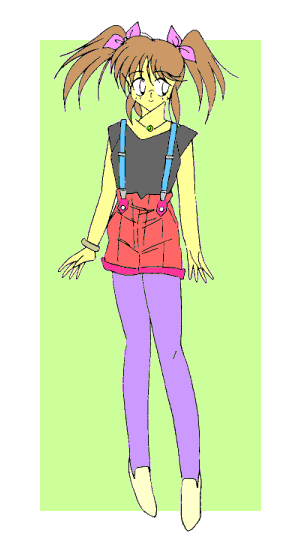
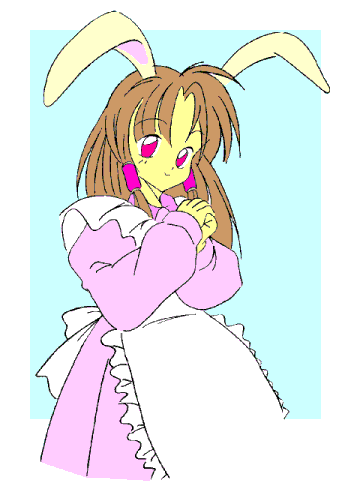
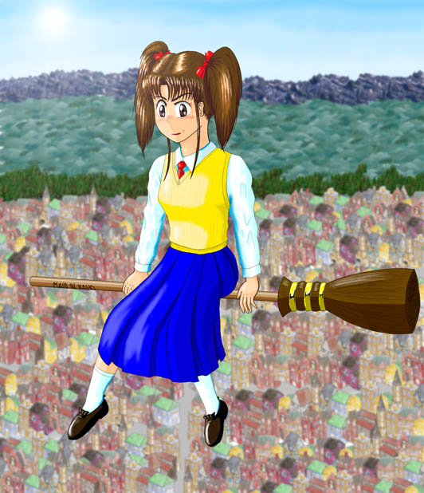
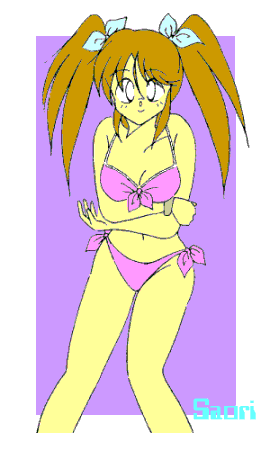
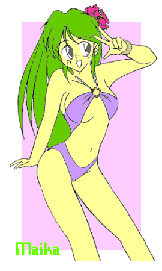
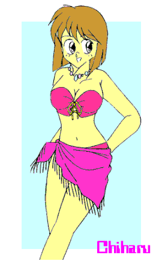

戻る
―― 萌え燃えっ！ 白塁学園高校女子ロボＴＲＹ部 ＥＸ−Ｓ――
さおりんとりびゅーとっ！
副題：「も〜っとおジャ魔なさおりんしゃーぷでどっか〜んっ！（笑）」
ＣＲＥＡＴＥＤ ＢＹ ＭＯＮＤＯ
―― 『ミストレスと奇妙な仲間たち（原作：夜夢さん）』編
――
この都市の入り組んだ路地の合間に、年齢不詳の女性が店主をしているその店はあった。
その店には、ある趣味の若者たちや若い女性たちの口コミで、賑わうというほどではないにしろ、そこそこの客が尋ねてくる。
定休日というものはなく、店主の気紛れでたびたび「休業中」の札がかかる。
もっとも、この店が何の店なのかは、常連客でも答えることができないだろう……
その店の名を、『ミストレスハウス』と言った……
「メガパペットもバイペッド（二足歩行）ロボットの一種だから、ＺＭＰ（ゼロ・モーメント・ポイント）制御で歩いているのよね。……ＣＰＧプログラムはこんな感じでどうかしら？」
「……え〜っと、ここのパラメータをこうして…………ここと、この数値を入れ替えてもらえますか？」
「あら、ずいぶんタイトな設定ね。……こんなので大丈夫なの？」
「もともと競技用ですし、上半身の動きや腰のひねりで機体バランスは充分コントロールできます。線形倒立振子モードだと制御則が単純ですから、いったん調整しておけばある程度は自由に動的歩行が可能なんですよ」
「パワーロスはＧＤＡ（自重支持力成分分離形機構）や関節の弾性で抑えているのよね。……鉛直軸まわりのモーメントはこれでいいかしら？」
「ＯＫです。……あと、重心制御プログラムの方なんですけど――」
「……ハーモニック減速機と駆動系の――」
「……足部の６軸センサと、胴体の加速度センサが――」
「……………………」（←専門的な会話）
「……………………」（←さらに専門的な会話）
「…………」
引きつったような苦笑を浮かべてカウンターからあとずさった白いタキシード姿のウェイターは、隣でぼーぜんと固まっているウェイトレスたちに気付き、その背中を軽くつついた。
休日の昼下がり。『ミストレスハウス』、一階喫茶室――
「みゃっ！ ……えっ？ あ――ふ、‘ふく’……さん？」
「う〜っ、ＡＳＩＭＯとＰＩＮＯとＣ−３ＰＯがトリオ漫才している幻覚が見えた……」
飛び交う技術用語についていけず、耳からぷすぷすと煙を上げかけていた（笑）彼女たちの様子に笑いをこらえながら、‘ふく’は再度カウンターの方を見やった。
「ところでふたりとも、あの娘（こ）のことなんだけど…………どう思う？」
ノートパソコンの画面を覗きながら青みがかった肌の美女と話し込んでいる、長い髪を頭の両側でキャンディヘアに束ねたキュロット姿の少女を指し示す。
「どう――って、う〜ん、可愛らしい娘だとは思うけど…………でも、あんな娘でもロボＴＲＹなんかするんだ……」
可愛いもの、少女趣味的なものが大好きな‘うさ’にしてみれば、油臭い有脚マニピュレーター（人型ロボット）で格闘戦をする「ロボＴＲＹ」など、その対極の極みなのだろう。
「それよりも、初対面で‘ひぃ’さんと意気投合する方がすごいと思います……」
日頃彼女に何かと世話を焼いてもらっている‘ねこ’にとっては、むしろそっちの方が気になるらしい。
「……た、確かにそれはそうだけど（笑）…………気がついてる？ あの娘、‘うさ’や‘ねこ’と
“同じ” なんだよ」
「「えっ？」」
‘ふく’の言葉に、ふたりは思わずその少女を凝視した。
彼女たちの頭の上にあるウサギ耳とネコ耳が、ぴくっと同じ方を向く。
「…………」「……え〜っと、だ、誰かの使い魔…………じゃないみたいだけど――」
それ特有の “匂い” が全くしないことに首をひねる‘うさ’。
ファミリアとしての経験が浅い‘ねこ’には、まだそれを感じとることはできないようだ。
‘ふく’は何度目かの苦笑を浮かべ、ふたりの方に向き直った。「そうじゃなくて、“もうひとつ”
の方……だってば」
「「……？？」」
ますますわけが分からなくなり、彼女たちの目が点になる。
‘うさ’、‘ねこ’、‘ふく’、そして‘ひぃ’……そう、彼らは皆、ヒトであってヒトではない。
動物の精の化身――魔法使いや魔女といった者たちの手足となって働く、妖（あやかし）の存在なのだ。

カチャッ――。
カウンターの奥の扉が開いて、浅黒い肌の少年が店の中へ入ってきた。
「 “鏡” に反応があったぜ、例の奴の……」
その言葉に、テーブルで別の客を相手にタロットカードを繰っていたショートボブの美女が顔を上げ、丸眼鏡の奥の目を細めた。
“魔女の店” 『ミストレスハウス』のオーナー、桐竹 愛ことミストレス・キリク。
その横へと寄り添い、少年――‘こう’は周囲に聞こえないよう、耳元でささやく。
「……で、どうするんだよ？ その気になれば、俺や‘うさ’でも相手できなくもないけど――」
「その点に関しては問題ないわ。ちょうどぴったりの人材もいることだし……」
店のスタッフでもあり、五人目の使い魔でもある彼の発言をさえぎると、ミストレスはいっそ「お茶目」と称してもいいような笑みを浮かべて立ち上がった。「え〜っと、沙織――さん……だったっけ？」
「ふみっ……？」
いきなり自分の名前を呼ばれて、くだんの少女……沙織は抹茶ケーキを口にくわえたまま後ろを振り返った。
数時間後。すっかり日の暮れ落ちた中央公園の一角――
「…………」
全高四メートルの人型格闘マシンの肩に腰をかけ、沙織は妙に醒めた視線であたりを見回した。
熱帯夜特有の “なま暑い” 空気が身体にまとわりつき、首筋にうっすらと汗をかく。
しかし機体の足元で同じように周囲をうかがっている‘こう’と‘ねこ’は、あまり暑さを気にしてはいないようだ。
頭の上で揺れるネコの耳と、背中から生えたコウモリの羽根……
――流行ってんのかね、あーゆーの……
ふたりのその姿に、知り合いの某眼鏡ネコ耳娘のことをふと思い出す。「あ……あの、‘ねこ’――さん？」
「はいっ？」
頭上から声をかけられ、‘ねこ’は傍らに立つ緋色のメガパペット――《スカーレットプリンセス》を振り仰いだ。
沙織はトリガー（操縦器）片手に機体からとび降りると、手元から伸びたケーブルをさばいて彼女の横に立った。
彼等以外の人影はない。……実は‘ふく’たち『ミストレスハウス』の他の面々が、公園のあちこちに
“ヒト払い” の結界を張っているためなのだが。
「ひとつききたいことがあるんですけど…………あのミストレスさんって、いったい……何者なんです？」
そう言って‘ねこ’の、文字通り「猫のような」切れ長の瞳を覗き込む。
「え〜っと、それは――」
首をかしげて逡巡（しゅんじゅん）する‘ねこ’。
実は「魔女」なんです……それでもって私たちは彼女の「使い魔」なんです……と言って、はたして信じてもらえるかどうか。
もっとも、あの丸眼鏡の女性がただ者――少なくとも単なる「コスプレ喫茶（笑）の女主人」でないことだけは、沙織にもなんとなく分かっている。
……かくいう沙織自身、「ただ者」ではない。
文月沙織――飯綱甲介。
体内に埋め込まれたナノマシンの力で男から女へ変身できる人間は、そうそういやしないだろう……たぶん（笑）。
ちなみに今回「沙織」に変身していたのは、映画のレディースデイ（千円均一）に行ってきたためだ。
「……来るぞっ」
それまで黙っていた‘こう’が、突然鋭い声を上げた。
次の瞬間、周囲の街灯が不安定に明滅して…………唐突に暗くなる。
「……！！」
そして沙織たちの目の前に、“それ” は音もなく、まるで暗闇からにじみ出るように姿を現した。
比喩ではない……実際、駆動音が全く聞こえてこなかった。
おまけにその輪郭が、陽炎のようにゆらゆら揺らめいている……ように見えた。
「……幽霊メガパペット？」
「そっ♪」
沙織（甲介）の胡散臭げな視線を軽く受け流し、ミストレスと名乗ったその女性は向かい側の椅子に腰を下ろすと、テーブルに肘をつき、両手の指をあごの下で組んだ。
「一週間ほど前のことなんだけど、ある場所で開催されていたレイヴ（ロボット重機を使った非公式のストリートファイト）に
“紐なし” ……つまり、無人のメガパペットが乱入してきた――っていう事件があって、その後あちこちで同一の機体が目撃されてるの」
「…………」
口元は微笑んでいるが、目は全く笑っていなかった。
沙織はその表情をうかがいながら、無言でコーヒーに口を付ける。
“幽霊メガパペット” の噂は、沙織――いや、甲介も以前に耳にしていた。……もっともあまり本気にしてはいなかったが。
「現れる時間は決まって深夜。『幽霊』かどうかはともかく、正体不明の無人メガパペットが夜な夜な徘徊していることだけは間違いないわ。
……で、次にそいつが現れる場所が分かってるとしたら…………どう？ 興味ないかしら？」
「…………」
彼女の浮かべた意味深な笑みに、沙織の中の甲介は「自分」の存在を見透かされたような気がした……
「沙織さんっ！！」
‘ねこ’の声が、沙織（甲介）の意識を現実に引き戻す。
一気に間合いを詰めてきた “幽霊メガパペット”
が放った一撃を、《スカーレットプリンセス》は両腕をクロスさせて受け止めた。
「ふんっ……問答無用かよ…………」
沙織は口中でそうつぶやき、トリガーを引き絞る。
どがっ！！――
間髪入れずに繰り出された左右の掌底に、“幽霊”
はたたらを踏んで二、三歩あとずさる。
「気をつけろっ！ そいつは――」
‘こう’の叫び声を無視して、沙織は《スカーレットプリンセス》の脚部を踏み込ませた。
ワン、ツーのコンビネーションで牽制……隙を誘って右肘を打ち込む。
しかし、“幽霊” はするりとした動きでその攻撃をかわし、間髪入れずに後方へと下がった。
ＲＣ（ラジコン）操縦や、自律行動プログラムとは明らかに異なる動きであった。
機種はサコミズ・モーターテックのＡＷ−０１６、機体の色は白……いや、全体がぼんやりと薄く光っているために判別がつかない――
「……くそっ！ 無人機のくせにっ」
そもそもプレイヤー（操縦者）不在でこれだけ機敏に動くこと自体、異常なのだが。
吐き捨てるように叫ぶと、沙織はケーブルをしならせ、トリガーに指示を入力する。
《スカーレットプリンセス》の拳が、蹴りが、風をまとって
“幽霊” に襲いかかる。
いくつかの攻撃は確実にヒットしたが、あとは全てかわされ、防がれてしまう。
そしてカウンターで拳を返され、《スカーレットプリンセス》は後ろによろめくようにバランスを崩した。
「こらえろっ！！」
なおも追いすがってくる “幽霊” の一撃を、二の腕で強引にブロックする。
《スカーレットプリンセス》の両膝が悲鳴を上げ、関節部から火花が飛び散った。
絡み合うように位置を入れ替えて、二体のメガパペットは互いの攻撃を受け流し、牽制し合う。
―― “幽霊” だと？ ……「手応え」のある幽霊なんて聞いたことねーぞっ！！
沙織の中の甲介が、吼えた。
右側へフェイント……機体の重心が移動する寸前に左へ切り返し、右の貫き手を
“幽霊” の肩口に突き入れる。
“幽霊” は半身をずらしてその攻撃をやりすごしながら、下から右の拳をアッパー気味に繰り出してくる。
胸元に浅くヒットするが、沙織（甲介）は意に介さず、《スカーレットプリンセス》を前に踏み込ませた。
「す、すごい……」
一進一退のその攻防を、息を詰めて見守る‘ねこ’。
「……ああ」
彼女を背中にかばい、‘こう’がかすれた声で同意する。
こんな間近でメガパペット同士の格闘戦を見るのは、ふたりとも初めてのようだ。
それでも‘こう’の目には、沙織が――いや、《スカーレットプリンセス》が
“幽霊” を徐々に圧倒しだしているように見えた。
さすがは甘水市ブロック上位ランカー、といったところか……
―― けど……これで済むのか？
‘こう’の頭にそんな思いがよぎった次の瞬間、均衡が崩れた。
頭部を狙って繰り出された拳を腕甲で外側へ弾き、《スカーレットプリンセス》はいきなり身を沈めた。
虚をつかれて一瞬動きを止める “幽霊” ……そのみぞおちに鋭くミドルキックを放つ。
がすっ！！―― 「いっけええええええ〜っ！！」
大きくのけぞった機体に、追い打ちのショルダーチャージ！！
カウリングがクラック（破裂）する音とともに後方へ跳ねとばされた
“幽霊” は、遊歩道脇の立木に激突して、そのまま擱座（かくざ）する。
「……決まったかっ！？」
沙織は左手でケーブルを引き寄せ、右手のトリガーを油断なく構える。
通常受け身も取らずに転倒した（地面に叩きつけられた）メガパペットは、フレームや電装系を破損し、作動不能になる。
仰向けになった相手がピクリとも動かないことを見定めて、沙織はようやくトリガーを握る手を緩めた。
「……お、終わった？」
「これでまた立ち上がってきたら、幽霊じゃなくて
“ゾンビ” かもな……」
そうつぶやきながら倒れた機体に歩み寄る‘ねこ’と‘こう’。
見ると、脇腹の亀裂からリキッド――人工筋肉を収縮させるケミカルリンゲル溶液がだくだくと流れ出している。
これでは立ち上がるどころか、指一本動かせない。
「…………」
輪郭の揺らめきが消失し、ボディの発光もおさまっていく…………
だが次の瞬間、“幽霊” メガパペットの胸部から、ソフトボール大の光球が湧き出るように浮き上がった！！
「！？」「……！！」
思わずあとずさったふたりの鼻先をかすめ、光球は青白い光を放ちながら宙を舞う。
「やばいっ！ ……そいつが本体だっ！！」
「えっ！？」
後ろを振り返って叫ぶ ‘こう’。あわててトリガーを握り直す沙織。
だが、光球は弧を描くような軌跡を残し、《スカーレットプリンセス》の胸元にもぐり込んだ。
「な……っ！？」
ぎぎっ……
《スカーレットプリンセス》の動きが、固まった。
そしてトリガーからの指示を無視して、ゆらり……と沙織の方に向き直る。
「そ――そんな……」
いつの間にかその機体は暗闇の中でぼんやりと光り、陽炎のような揺らめきをまとっていた……
「さ、沙織さん…………‘こう’さんっ！」
「……ちっ」
‘ねこ’のおびえた声に、‘こう’の舌打ちが重なる。
「な……何がいったいどーなってるんだっ！？」
ガチャガチャとトリガーに「強制停止」のコマンドを打ち込みながら、沙織（甲介）が声を荒らげた。
だが、《スカーレットプリンセス》はまるでその指示に抗うかのように、ぎくしゃくした動きでゆっくりと歩き出した。
そして、操縦者――沙織につかみかからんとするが如く、両の腕を伸ばしてきた。
「沙織さん危ないっ！」
‘ねこ’の悲鳴じみたその声に、身をひねってそこから逃れる。
「じ……冗談じゃねーぞっ」
得体の知れないものに自機のコントロールを乗っ取られ、沙織はあとずさりながら吐き捨てるようにつぶやいた。
《スカーレットプリンセス》 ……いや、それにのりうつった（？）「何か」は、再び沙織たちの方へと近づいてくる。
「……‘ねこ’っ、下がってろっ！」
「みゃあ……っ！！」
引っつかむように彼女を自分の背後にやると、‘こう’は背中のコウモリ羽根を、ばさっ……と広げた。
髪の毛が逆立ち、大きく開いたその口元……発達した犬歯の間の空気が小刻みに蠢動する。
―― 一撃で決めてやるっ！ この距離なら…………はずさないっ！！
コウモリは餌である羽虫に超音波を照射し、その動きをある程度麻痺させてから捕食するという。
その化身である‘こう’もまた、口蓋から放つ超音波を収束させ、物理的な攻撃力に転化することができるのだ。
かぁ・あ・あ・あ・あ・あ・あ・あ・ああああああ・・・・・・っ!!
その咆哮と重なるように、きぃいいいいいいんっ……と、金属をこすり合わせるような音が周囲にこだまする。
「みっ……みゃああぁっ！！」
思わず耳を塞ぎ、目を閉じてその場にしゃがみこむ‘ねこ’。
「…………くっ」
沙織（甲介）はなおもトリガーを操作しながら、迫ってくる自分の機体を無言でにらみつける……
・・・・・・あ・あ・あ・あ・あ・あ・あ・ああああああ・・・・・・・・・・・・
「……あ？」
突然‘こう’がすっとんきょうな声を上げ、同時にあたりを静寂が包んだ。
「……？」
街灯がまるで自分の役目を思い出したかのようにまたたき、再び明るさが戻ってくる。
そしておそるおそる顔を上げた‘ねこ’が見たものは、両腕を振り上げたまま静止した《スカーレットプリンセス》と、その前で呆然と立ちつくす沙織と‘こう’の姿であった……
「…………つまり、最初から計算づくだった――ってわけだ……」
「ごめんなさいね。……でも、特に実害があったわけじゃないし、それに
“これ” をあのまま放っておいたら、いろいろまずいことになるのよ」
憮然とした表情の沙織に、ミストレスは手にしたＣＤ−ＲＷをもてあそびながらそう答えた。
“幽霊” は今、その中にデータ化されて捕らえられている。
「あの、それ……」
「これ？ そうねぇ……出来はいまいちだけど素体としてはいろいろ使えそうだし。……なんだったら『ロボット三原則』をおぼえ込ませて、もう一度あなたのメガパペットにとり憑かせることもできるけど？」
「！！ ……冗談じゃないっ、二度とゴメンだっ！」
思わず大声を上げる沙織。「……大体そうと分かってたんなら、ちゃんと話してくれりゃいいのに――」
「まあまあ……、確かに説明しなかったのは悪かったと思うけど……でも、知ってたら引き受けてくれたかしら？」
笑みを浮かべ、さらりと受け流すミストレス。
沙織（甲介）は口をへの字に曲げ、無言で彼女を見返した。
「「…………」」
‘こう’と‘ねこ’も、カウンターの奥からテーブルの方をうかがっている。彼らも沙織同様、昨日の時点ではくわしく説明されていなかったらしい。
だが、動かなくなった機体から “幽霊” が抜け出てくることも……それが新たな「依代（よりしろ）」を求めることも、ミストレスはハナっから知っていたのだ。
そして、《スカーレットプリンセス》の動作制御プログラムに
“幽霊” 捕獲用のトラップをひそかに仕掛けていたのは、言わずと知れた‘ひぃ’である……
一夜明けたその日の午後――
『ミストレスハウス』に、沙織（甲介）以外の客はいない。
「…………で、結局それって、何だった――の？」
オレの正体、十中八九バレているだろうな……と思いつつ、語尾を言い直して問いかける沙織。
「おそらく何処かの企業か研究機関が、中途半端な魔法技術でこしらえた心霊的オートマトン……人工霊体ってとこでしょうね」
「人工霊体……？」
目の前の魔女が口にしたその言葉を繰り返し、沙織の中の甲介は「魔法＝未知のテクノロジー」だと自分自身を納得させた。
考えてみれば自分の身体の中にあるナノマシンも、どちらかといえば「魔法」の領域に近い。
「……それを人型機械にわざと『憑依』させて、ＡＩ制御よりも融通のきくロボットを生み出そうとした――」
「けど、逃げ出した…………あるいはデータ収集のためにワザと外へ出したか……」
ミストレスの説明を、横にいた‘ひぃ’が補足する。「……いずれにせよ、そんな連中には過ぎたオモチャよね。でも私たちが今回の『幽霊メガパペット騒動』にかかわったのは、“幽霊”
そのものが目的じゃなく、それを生み出した魔法技術が何処から流出したのかをつきとめることにあったの……」
「とにかく、そこらへんのことは‘ふく’があとでうまく立ち回ってくれるわ。
……改めてお礼を言うわね、沙織ちゃん。あなたがいてくれたから今回の一件、うまくいったのよっ」

「はあ……」
いまいち納得できない……。体よく「おとり」にされた身としては当然だろう。
「は〜いお待たせっ、‘うさ’特製のストロベリータルトとローズティーで〜すっ♪」
店の厨房から、ウサギ耳のウェイトレスがティーポットを載せたトレイを持って出てきた。
沙織とミストレスたちの前に、手際よくカップが用意される。
「……おいおい、お茶は俺が淹れたんだぞっ」
苦笑混じりにつぶやく‘こう’。
ぺろっと舌を出す‘うさ’につられて、沙織の口許にも笑みが浮かぶ。
――ま、いいか…… 「……美味し♪」
今度ほのかにもこの不思議な店のことを教えてやろう……と思う、沙織の中の甲介であった。
『ミストレスと奇妙な仲間たち』シリーズタイトル＆公開設定集は、
こちらをご覧ください。
―― 『らいか大作戦（原作：かわねぎさん）』編――
それは甲介の目の前で、なんの支えもなしに宙に浮かんでいた。
長さはおよそ１６０センチ。一方の端に鳥の羽根の意匠が施されている、細長い棒状の物体である。
太さは片手で握りしめられるくらいで、ぱっと見はずばり
“魔法使いの空飛ぶホウキ”。
だが、実はその通りの代物だったりする（……笑）。
「――というわけで、これが今回のために用意した新型のオーラスティック（※１）、『エンプラ２００２』です」
眼鏡をかけた、甲介より年下の少女が技術者然とした口調でそう説明する。
「試験運用段階のオーラ増幅器を搭載しているんでサイズは大き目になっちゃいましたけど、これなら甲介さんのようにオーラ能力（※２）が並の人でも、かなり自由に扱えるはずです」
「ふーん。確かに以前見せてもらったものは、もっと細かったよな。……乗ってみてもいいか？ これ」
「いいですよ。……あ、念のため一応リミッターをかけてありますけど――」
くれぐれも無茶はしないでくださいね……という少女の言葉を聞き流し、甲介は新しい玩具を与えられた子どものような表情を浮かべて、“ホウキ”
に跨がった。
お尻が当たる部分に衝撃緩衝フィールドが展開しているので、乗り心地は悪くない。
「慣れればオートバイのように身体を左右に倒して姿勢を制御できますけど、傾け過ぎるとローリングしちゃいますから気をつけてくださいね」
「りょーかいっ」
中央あたりにあるグリップを右手で握り、「垂直に上昇っ」と思考する。
オーラスティック『エンプラ２００２』はそれに感応して、甲介の身体を一気に２０メートルの高さへと運んだ。
「うわわっ！ …………おおっ」
足元に広がる、白鷺重工航宙研（※３）の実験場。
どこらへんにリミッターがかかってるんだっ……と思いつつ、甲介は驚嘆の声を上げた。
※１「オーラスティック」
…… 頼香たちが対イーター戦で装備する、個人用戦闘／飛行デバイス。細長い棒状で、近接戦ではブレード、中距離戦では射撃武器として使用する。効果は使用者のオーラ能力に左右されるため、誰しも使えるわけではない。飛行能力はあくまでもオプション。
今回使用する『エンプラ２００２』は、実験段階のオーラ増幅器を組み込み、フライトツールとして再設計されたもの。
※２「オーラ能力」 …… 惑星連合で研究されている生体／精神エネルギーの総称。この能力が突出している人間は、普通見ることができないもの（幽霊？）が見えたり、手かざしでヒーリングがおこなえたりする。
※３「白鷺重工航宙研」 …… 果穂の父親、庄司紳二が統括する研究機関。惑星連合との接触があり、供与されたオーバーテクノロジーの管理等もおこなっているらしい。 |
「……ところで、他の準備は？」
がこんっ――と音がして、自販機からペットボトルが転がり出る。
「ＴＳ９（※４）には『新型オーラスティックの実働テスト』という名目で許可を得てます。……場所は
“ここ” を使えば問題ないでしょう」
甲介の問いに、眼鏡の少女はスポーツドリンクのペットボトルを受け取りながらそう答えた。
日差しを避け、木陰へと場所を移す。
何度かパラグライダーで「飛んだ」経験はあるが、それとは似て異なるオーラスティックの飛行感覚に、甲介は軽い興奮をおぼえていた。
「ここ――って、この航宙研のグラウンドで？」
「広さも申し分ないですし……それに、父に頼んで
“部外秘” の使用申請を出してもらいました」
「へえ……」
彼女の段取りの良さに感心しながら、手にしたもうひとつのペットボトルに口をつける。
――よくそんな申請が…………いや、あの親父さんならそれもありか……
そんなことを考えながら、甲介はさっきまで自分が飛び回っていた（……笑）夏の青空をまぶしそうに見上げた。
「……じゃあ、あとはチームの編成だけだよな」
「ええ。……で、そのことなんですけど甲介さん、魔法のホウキは女の子の方が絵になると思いませんか？」
「はいっ？」
いきなりそう話を振られて、甲介の目が点になる。
「……ですから魔法の空飛ぶホウキには、男より女の子の方が似合うんです。
ホウキに跨がり、スカートをひらひらさせて空を飛ぶ魔法少女…………う〜ん、やっぱりこうでないとっ♪」
確固たる口調でそう断言すると、彼女は甲介の方に向き直り、首をかしげて意味ありげに微笑んだ。
「――というわけで、当日は『沙織』さんになって来てくださいねっ、甲介さん」
ぶぼ・・・っ!! 「な…………なんでそれを知ってるっ？」
飲んでいたスポーツドリンクを逆流させて驚く甲介に、眼鏡少女――庄司果穂（しょうじ・かほ）は涼しい顔で人差し指を立てた。
「……蛇の道はヘビです」
| ※４「ＴＳ９」 ……
正式名称はトランス・スペース・ナイン（Trans
Space Nine）。惑星連合の宇宙ステーションで、地球から1.5光年の位置にあるトランスワープチューブの管理と、保護観察惑星である地球の監視が主な任務。頼香たちはここの所属。 |
白鷺重工業（株）航空宇宙システム研究所、第三宇宙研究室屋外試験場。
ちょっとしたサッカー場並の広さがあるその敷地の両端に、今日はてっぺんに丸いリングのついた高さ十六メートルのポールが三本ずつ、ゴールポストのように向かい合わせで立てられていた。
……もちろん、色は金色（笑）。

「果〜穂〜ちゃ〜んっ……」
「はい？」
地の底から響いてくるようなその声に、果穂は『エンプラ２００２』片手にくるりと振り向いた。
「……ちょっと〜っ、これってどうにかならないの？」
「えっ？ でもそれ着ておかないと、万がいちオーラスティックから振り落とされたときに――」
「それは分かってるっ。……あたしが言いたいのは、この服のデザインの方なのっ」
「結構似合ってると思いますけど？」
芝生を踏みつけワニ目で詰め寄ってきた年上の少女――藤原ほのかに、涼しい顔をして答える果穂。
「……高校生にお〇ャ魔女のコスプレは無理があるのっ」
ほのかは両手を腰に当て、憮然とした表情を浮かべた。
爪先がとんがった編み上げブーツに、花びらのように開いた膝上のフレアスカート。お姫様ドレスのような肩口のパフスリーブとリボン。
確かに一介の女子高生には、ちょっと抵抗ある格好かもしれない（笑）。
……とは言うものの、背後では同じその服を着た後輩や友人たちが、嬌声を上げながら空中散歩を楽しんでいるのだが。
「どうせなら “原作” 本通り、ローブにすればよかったのに……」
「あれはいまいち可愛くありません」
そう言う果穂は、惑星連合（※５）の制服をベースにした魔法少女風のプロテクトドレス（※６）を身につけている。
「可愛いとか可愛くないとかの問題じゃないわよ。……だいたい何？ このひらひらスカートはっ」
裾をつまみ上げ、すごむほのか。
「大丈夫です。今回は女子限定ですので下から覗かれることもありませんし。…………でも残念ですね、それ甲介さんに見てもらえなくて――」
「そ・う・い・う・いらんことを言うのはこの口かあああああっ！」
一瞬酢を飲んだような顔つきになったほのかは、いきなり果穂を背中からはがい締めにして、その口に指を突っ込みぐにぐにと引っ張りまわす。
「ひゃっ、ひゃほ…………ひゃへへ、ひゅひゃひゃひっ、ひょひょひゃひゃ〜ん……っ！」
「あたしはひょひょひゃなんて名前じゃないわよ〜っ♪」
「ひ〜んっ……」
じたばたもがく果穂だったが、ほのかの方が上背（と力）があるのでそう簡単には逃げられない。
「……やれやれ」
そんなルームメイトを横目で見ながら、豊かな黒髪をポニーテールにまとめた少女――戸増頼香（とます・らいか）は大きくため息をついた。
まあ、ほのかも果穂も本気でやってるわけではない（？）。ひとりっ子のほのかは年下の女の子とじゃれ合うのが大好きだし、果穂の方は例によって、「お姉さんにいたずらされて可愛い悲鳴を上げる女の子」の自分に酔っている節がある。
しばらく放っておこう――と、肩をすくめ、頼香はその場にいたもうひとりの方に向き直った。
「果穂の奴がまたなんか変なこと言ったみたいで、甲……いや、沙織さんにも迷惑かけちゃいましたね」
「……ま、まあね」
笑顔を引きつらせながらそう答える沙織（甲介）は、ほのかと色違いのプロテクトドレスにその身を包んでいる。
ちなみにこの服は、以前果穂が作って頼香に「ダメ出し」されたプロトタイプをリフォームしたものだ。
二人で並ぶと、沙織の方が若干背が高い。
小学五年生であると同時に惑星連合の少女士官でもある、戸増頼香ことライカ・フレイクス。
かたや体内にインプラントされたナノマシンの力で、男から女に変身できる文月沙織。
「……沙織さんの秘密は、俺と果穂以外の人間には絶対漏らしませんから」
「あ、ああ……そ、そうしてもらえると助かる――よ」
小声で耳打ちしてくる頼香と目が合って、思わず顔を赤らめ頬を掻く。
彼女たちとはどちらかといえば『甲介』として会うことが多いので、この姿だとやはり恥ずかしさが先に立つのだ。
「あ、さおりんさんだ。こんにちは〜」
「え？ あ、来栖ちゃん？ え…………え〜っと、き……今日はよろしくねっ」
近づいてきたショートカットの少女――雲雀来栖（ひばり・くるす）に、あわてて口調を変えて返事する。
隣でくくっ……と笑いをかみ殺している頼香に、ちょっとムッとする沙織であった。
ちなみに沙織（甲介）は、頼香と果穂が自分と
“同じ” であることに…………全く気付いていない（笑）。
もっとも頼香と果穂は、もう二度と元の姿には戻れないのだが。
※５「惑星連合」 …… 地球から２１５光年離れた宙域にある、「テラン」「プレラット」といった異星文明を中核とした星間国家連合体。宇宙開発初期の惑星を監視し、科学力がある一定に達した段階でその星に代表団を送り、連合への加盟を薦める。
地球には５０年前から非公式に接触を繰り返しており、日本にも彼らの存在を知る者は多い。ちなみに果穂と来栖には「現地協力員」という肩書がある。
※６「魔法少女風のプロテクトドレス」
…… 『らいか』本編では「防護服」「戦闘服」と表記されている。惑星連合の女性士官用ユニフォームをベースに、対衝撃、対オーラ攻撃への防御力を強化したもの。デザインはオーラスティック同様、果穂の趣味。 |
「オーラスティックを使ったら、某大人気ファンタジー小説に出てきた『あれ』ができるんじゃないかな？」
ほのかのその一言が、そもそもの始まりだった。
魔法のホウキで縦横無尽に空を駆け回りながらボールを奪い合う、あの競技を……である。
そして惑星連合三人娘のひとり――メカニック担当である果穂が飛行能力を特化させたオーラスティックその他もろもろを用意し始め、その提案（？）はにわかに現実味を帯びていった。
もっともその時点で、“仕切り” の主導権がほのかから彼女に移ったため、「女子限定」ということになってしまったのだが。
「では、これからクィディッ…………もとい、特殊状況下における新型オーラスティックの実働試験をおこないます」
“審判役” をかって出たれも副指令（※７）が、グラウンドの真ん中でそう宣言した。
ほのかチームは、ほのか、沙織、舞香、かなめ、祥子の毎度おなじみ女子ロボＴＲＹ部の五人に、助っ人として御栗崎レオナ、先斗院レイナの眼鏡ネコ耳娘二人が加わるのだが、沙織（甲介）とほのか以外には惑星連合の存在は伏せられており、『エンプラ２００２』も
“天才少女” の果穂が航宙研の技術者と共同で開発したことにしてある。
「う〜んいまいち信じられない。……重力制御？ 思考コントロール？ 今の科学技術を完全に超えてるじゃない――」
「ちょっと祥子、さっきから何ぶつぶつ言ってんのよ？」
「……エイリアンテクノロジー？ ううん、そんなはずはないわ。そもそも『ホウキに跨がって空を飛ぶ』なんて発想自体、めちゃくちゃ地球人的過ぎるし――」
「おーいしょーこちゃ〜ん、もしも〜し……」
対する頼香チームは、頼香、果穂、来栖の三人に、頼香そっくりの容姿をもつ人工生命体（※８）キャメル、ＴＳ９のキャロラット人（※９）技術士官みけね・こーな（少尉）、元ＤＯＬＬ（※10）のミナス・ゴーダ（少尉）、そして頼香たちのクラスメイトにして秘密結社『果穂ちゃん倶楽部（※11）』を実質的に取り仕切っている信夫美優（しのぶ・みゆ）……
あれっ？ 彼女も惑星連合のことは知らないんじゃ――
「ボクは美優ちゃんであって、美優ちゃんじゃないでちゅよ」
美優本人の意識は眠った状態になっており、その身体をプレラット人（※12）のもけが五感をシンクロさせて遠隔操作（笑）しているのだそうだ。
人間の視線や「服を着た」感覚が物珍しいのか、しきりにキョロキョロしたり、ひらひらスカートの裾を気にしたりしている。
どうやら頭に被ったヘッドギアが、受信機らしい。
「ひまわりの種（※13）は、ヒューマノイドの味覚ではどんな味がするんでちゅかね。あとで試してみるでちゅ」
「……いいのか、果穂？」
プレラット訛り（笑）でしゃべるクラスメイトに違和感をおぼえながら、小声で隣に尋ねる頼香。
「こういうイベントだと、もけさんはいつもお留守番か裏方ですからね。たまには一緒に参加するのもいいでしょう。
美優さんの方は、わたしがうまく誤魔化しておきますから……」
「でも、もけちゃん男の子でしょ？ 女の子の身体になるなんて…………なんかエッチ――」
来栖のその発言に、頼香、果穂、そして沙織の三人は同時に明後日の方へ視線を向けた。
＞そんな事より○ーリ○グ女史よ、ちょいと聞いてくれよ。
＞本編とあんま関係ないけどさ。
＞昨日、近所の○グ○ーツ行ったんです。○グ○ーツ。
＞そしたらなんかマ○ルがめちゃくちゃいっぱいで座れないんです。
＞で、よく見たらなんか垂れ幕下がってて【映画公開記念】とか書いてあるんです。
＞もうね、アホかと。馬鹿かと。
＞お前らな、映画公開記念如きで普段来てない○グ○ーツに来てんじゃねーよ、ボケが。
＞公開記念だよ、公開記念。
＞なんか親子連れとかもいるし。一家４人で○グ○ーツか。おめでてーな。
＞よーしパパはもおハー○イオ○ーたんハァハァ、とか言ってるの。もう見てらんない。
＞お前らな、豊○天狗の試合チケットやるからその席空けろと。
＞○グ○ーツってのはな、もっと殺伐としてるべきなんだよ。
＞隣にいる奴がヴォ○デ○ートの昔使ってた学用品でラリってまわりのマ○ル皆殺しにしてもおかしくない、
＞刺すか刺されるか、そんな雰囲気がいいんじゃねーか。
＞女子供は、すっこんでろ。 |
「……何？ 上のやたらと伏せ字ばっかな書き込み」
「さ、さあ……」
※７「れも副指令」 ……
ＴＳ９の副司令官。階級は少佐。「任務」と称してしょっちゅう不在になる指令官に代わってＴＳ９の全指揮を担う、苦労性（？）な少女士官。
※８「人工生命体」 …… 「オーライーター」のこと。開発者はテラン人科学者ヌニエン（プラム）・スピナー博士。基本形態は不定形の流動体だが、知的生命体の「オーラ」を捕食することでその姿を人型に固定していく特質がある。キャメルは頼香そっくりになるように調整された個体。
※９「キャロラット人」 …… 惑星連合を構成する種族のひとつで、ネコ科から進化した知的生命体。ヒューマノイド体型でネコ耳ネコ尻尾を有する。なお、レオナ＆レイナはキャロラット人ではない。……たぶん（笑）。
※10「ＤＯＬＬ」 …… 正式名称Ｍ・Ｏ・Ｅ−ＤＯＬＬ（Mecanical
and Organic Exceed Doll）。機械／生体ハイブリット種族で、外見は金属装甲を身につけた１０〜５歳くらいの少女の姿をしている。「ＤＯＬＬナノマシン」と呼ばれる微小機械を口移しで他の知的生命体に取り込ませ、「同化」することで仲間を増やす。体内のナノマシンを休眠させることでＤＯＬＬ集合意識とのリンクを切断し、元の自我を取り戻すことができるが、完全に元の姿に戻す方法は今のところ確立されていない。
※11「果穂ちゃん倶楽部」 …… 果穂のファンクラブ。オーナーは果穂パパこと庄司紳二。会長は謎の赤ジャージのヒト。だが実質はナンバー３である美優が取り仕切っている。
※12「プレラット人」 …… 惑星連合の中核を担う、げっし類から進化した知的生命体。見た目は「とっとこ某」。
※13「ひまわりの種」 …… プレラット人にとっては、強烈な嗜好性と常習性がある食物。ある意味“麻薬”に近い。 |
れも副指令の手から、「赤の十点玉」が上空に向かってトスされ、ホイッスルが鳴り響く。
十五本（審判を含めて）のオーラスティックが一気に垂直上昇……そしてたちまちボールの争奪戦が始まった。
それを追いかけて「黒の暴れ玉」が二つ、一直線に飛び上がり、「金の百五十点玉」がきらめきをのこして宙に消えた。
……では、ここで各チームのオーダーを紹介しよう。
| ポジションとその役割 |
ほのかチーム |
頼香チーム |
| 攻撃（chaser） 「赤の十点玉」を相手ゴールに投げ入れる。 |
新山舞香 古堂かなめ 加納祥子 |
庄司果穂 雲雀来栖 キャメル |
| 守備（keeper） ゴールを守る。 |
藤原ほのか |
ミナス・ゴーダ |
| 打撃（beater） プレイヤーを襲う「黒の暴れ玉」を打ち返す。 |
御栗崎レオナ 先斗院レイナ |
信夫美優（もけ） みけね・こーな |
| 探索（seeker） 高速で動く「金の百五十点玉」を捕まえる。 |
文月沙織 |
戸増頼香 |
先手を取ったのは、舞香たちであった。
巧みなパスワークで果穂と来栖のチェックをはずし、一気にゴールへと攻め込む。
だが、キーパーのミナス少尉は動かなかった。……いや、動けずにいた。
何故なら――
「うううっ、は……恥ずかしいよぉ……」
真っ赤な顔をして、オーラスティックに跨がったままもじもじと太ももをこすり合わせる。
今は頼香たちと同年代の少女士官であるミナスだが、つい最近まで――
ＤＯＬＬ化される以前は、れっきとしたテラン人（※14）の男性だったのだ。
女性士官服のスカートにもまだ慣れていないのに、いきなりこの
“魔法少女” な格好である……固まってしまうのも無理はない。
そんなミナス少尉の横をすり抜け、ゴールに肉薄するほのかチームの三人。
あわててゴール前に回り込んできたキャメルがフェイントをかけ、かなめの手から「十点玉」をはたき落とした。
「来栖ちゃん、パスっ！」
「はいっ」
だが、受け取った来栖の背後から、「黒の暴れ玉」が猛スピードで迫るっ。
「うちにまかせるにゃっ！」
それに気付いて素早く間に入ったみけねが、手にしたオーラハリセン（※15）をスイング。「暴れ玉」はほのかの方へと弾き飛ばされた。
ちなみに彼女は、キャロラット星の関西方面出身らしい（笑）。
「……おわっ！！」
およそ女の子らしからぬ叫び声を上げて “ホウキ”
にしがみつき、よけるほのか。
その間に果穂、来栖、キャメルの三人が、彼女をかわして「赤の十点玉」をゴール――
金のポールの先端にあるリングの中へと投げ込んだ。
「やりぃっ！」
オーラスティックでの空中機動は、もちろん頼香チームに一日の長がある。……だが、ほのかたちも負けてはいない。
「……まだまだっ！ 舞香、かなめっ、Ａクイックっ！ 祥子は左からっ！ レオナはみけねちゃんたちの動きに注意して！！」
体勢を立て直し、矢継ぎ早に指示を出すと、ほのかはキーパーダッシュを仕掛けた。
速攻でパスをつなぎ、敵陣深く入り込む舞香とかなめ。
レオナの打ち返した「暴れ玉」が来栖たちの連携を崩し、左下から急上昇した祥子にパスが通る。
「しょーこちゃん、ナイスっ！」
すかさずシュートっ。
※14「テラン人」 ……
惑星連合の中心勢力を誇る、地球人と同種のヒューマノイド。頼香のオリジナル、ライカ・フレイクスはテラン人と地球人のクォーター（祖母が地球人）。
※15「オーラハリセン」 …… 宇宙ステーションＴＳ９で流行（？）しているツッコミデバイス。見た目は普通のハリセンだが、オーラを展開することでツラの皮の厚いＤＯＬＬたちにもツッコミを入れることができるすぐれもの。 |
乱戦が続く中、沙織と頼香は前後左右上下を飛び回るチームメイトと相手プレイヤーの間をすり抜けながら、「金の百五十点玉」を探し続けた。
現在の得点は百九十対八十で、頼香チームが大きくリード。
お子さまランチ（※16）につられて立ち直った（開き直った？）ミナス少尉が、鉄壁のセービングで舞香たちのシュートを阻止しているのだ。
……だが、「金の百五十点玉」をキャッチすれば一気に得点をひっくり返すことができ、同時にその時点で試合が終了する。
「いい？ 沙織ちゃん。オーラスティックは頼香ちゃんの方が慣れているんだから、絶対スニッ……もとい、『金の百五十点玉』を取りにいってよっ」
極端な話、「相手に百五十点以上の差をつけられさえしなければ、逆転勝利が可能」というわけだ。

その時……沙織（甲介）の視界の片隅で何かが光った。
「「見つけたっ！」」
同時に叫ぶ沙織と頼香。次の瞬間、二人は弾かれたように飛び出した。
プレイヤーの接近を感知した「金の百五十点玉」は、慣性を無視した動きで垂直に落下する！
「うわ……っ！」「……っとと！」
正面衝突をすんでのところで回避。……沙織と頼香は一瞬視線を絡ませると、間髪入れずに急降下した。
ツインテールとポニーテールが突風になびき、みるみる地面が迫ってくる……
「「く……っ」」
互いに横目で相手をうかがい……そして同時に機首を引き起こす。
ドウッ――！
地面ぎりぎりのところで制動をかけ、ブーストＯＮ！！
数瞬、ぐっと息が詰まり…………二人は一気に「金の百五十点玉」へと追いすがった。
「……もらった！」「させるかああっ！！」
先を争うかのように手を伸ばす沙織と頼香。だが、その時――
「……さおりんさんっ、危ないですにゃっ！！」
「黒の暴れ玉」の接近に気付いたレイナが、いきなり二人に突っ込んできた。
そして、沙織の眼前で鮮やかに定点ターンをきめながら……手にしたオーラハリセンを大きく振り抜いた。
ばっこおおおおおおお〜んっ――！
ものの見事に空振りしたそれは、同じように頼香のガードにまわろうとした美優（もけ）の顔面をおもいっきりヒットするっ。
「ふみゅううっ……」
「あああああっ、ご……ごめんなさいですにゃっ！ わ、わざとじゃないですにゃあああああっ！」
「「…………」」
あまりに “お約束” なその展開に、目が点になる沙織と頼香。
はっと我に返った二人は、半分気絶しかけてふらふらする美優（もけ）の元へオーラスティックの機首を巡らせた。
だが……
「あ、あれ？ ……ボク、なんでこんなところに――」
がくんっ……と身を起こし、ぱちぱちと目をしばたたかせてあたりを見回す美優。
どうやら今の一撃でもけとのリンクが切れてしまい、彼女本来の意識が覚醒してしまったらしい。
そして――
「な・・・なんでボク、空飛んでるのおおおお〜っ！！？？」
次の瞬間、美優は三つ目の「暴れ玉」と化した……
| ※16「お子さまランチ」
…… 味覚がお子さまなＤＯＬＬたちにとって、お子さまランチは究極にして至高のメニュー。だが、料理の心得があるＤＯＬＬが作るそれは大人の食通をもうならせるという。 |
パニくった美優をオーラフェイザー（※17）で気絶させ、沙織と頼香の二人がかりでその身体をささえて地面に下ろす。
そしてそのまま、研究棟の休憩室へと彼女を運び込む。
「美優ちゃん、大丈夫かな……？」
「ミニマムレベルで撃ってますから、三十分ほどで目を覚ますでしょう」
「そもそも誰のせいよ、誰の――」
クラスメイトを心配する来栖と果穂、そしてほのかも小走りにそのあとを追う。
「ごめんなさいですにゃごめんなさいですにゃっ……でもほんとにわざとじゃないですにゃ…………」
気が動転しているのかあわてているのか、涙目で誰彼構わず何度も何度もあやまり続けるレイナ。
「……はあ、なんだかどっと疲れたにゃ」「うちもだにゃ……」
背中合わせでもたれ合い、口々にそうつぶやくレオナとみけね。
「あ〜でも、おもしろこわかったぁ〜」
「相変わらずマイペースよね、あんた……」
「…………やっぱり変だわ。あんな装備まであるなんて――」
まだまだ元気いっぱいの舞香。あきれ顔のかなめ。しつこくこだわっている祥子。
そして――
「オーラスティックを制式装備に採用するのは、やっぱり見送った方がいいようね……」
最後まで任務（？）に忠実な、れも副指令だった。
結局決着がうやむやなまま、第一回『魔法のホウキで縦横無尽に空を駆け回りながらボールを奪い合う』競技は終了となったのであった。
「おいおい……、『第二回』もするのかよ……」
「あっそうだ、『暴れ玉』の回収……忘れてるんじゃないのか？」
「…………」
| ※17「オーラフェイザー」
…… オーラエネルギーを“弾丸”として撃ち出す武装。生体にのみ効果がある。通常の「フェイザー」とは似て非なるものだが、いつの間にかこの名称が定着している。「ガン○ム」で機関砲のことを全て「バルカン」と称しているのと同じ。 |
ビデオカメラ片手に頭にコブ作って気絶している庄司紳二氏が発見されたのは、それから小一時間たってからのことだった……
この作品の設定は、『らいかワールド』の世界観に基づいています。設定詳細は
http://www.ts9.jp/
をご覧ください。
『らいか大作戦』シリーズタイトルは、
こちらをご覧ください。
―― 『みらくる☆ＣＨＡＮＧＥすてーしょん（原作：Ｋａｒｄｙさん）』編
――
青い空、白い雲。
寄せては返す、波の音……
「・・・海のバカヤロおおおお〜っ！！」
「ちょっとさおりん、あんた何こっ恥ずかしいことしてるのよっ？」
背中越しに飛んでくる、身もフタもないツッコミ（笑）。
沙織（甲介）は波打ちぎわでしばし硬直し、ぎにっ――と首を巡らせ声の主をにらみつけた。
「……今回は “男の親睦”
だったんじゃなかったのか？ 哲也っ、進っ！！」
「あらやだっ、今のあたしは『舞香』よ――」
「ボクは進じゃなくて、『千春』だよっ」
「…………」
あっけらかんとした笑みを浮かべて「おいでおいで」をする彼女（笑）たちに、沙織（甲介）は口元をひくひくと引きつらせた。
ことの起こりは、三日前にかかってきた一本の電話からだった――
「海水浴ぅ……？」
『今度のサマーライブの前に、うまい具合にオフ入ってさ。……どうせ夏休みでヒマしてるんだろ？ 甲介も一緒に行かないか？』
受話器の向こうの相手の名は、垣内哲也（かきうち・てつや）。
学校は異なるが、甲介にとってはお互い共通の「秘密」を抱え合う、気の置けない悪友（笑）のひとりである。
「一緒に――ってことは、進の奴もか？」
『ああ、もちろんそうだけど……』
「何たくらんでる？」
『……おいおい』
甲介のつぶやきに、苦笑じみた声が返ってきた。
「だってそうだろう？ オレとお前と進がそろったら、また例のパターンだろが……」
『いつもいつも「舞香・千春・沙織」ってか？ ……んじゃ今回は男同士の親睦ってことで――』
「なんだそりゃ……」
『いいからとにかく三日後の土曜日、いつものサ店の前に集合な。……バッくれんじゃねーぞっ』
「…………」
「……相変わらず強引だな、哲也の奴――」
電話を終えた甲介は、そうつぶやきながら一枚のＣＤケースを手に取った。
ジャケットには、二人の少女のバストショットがトランプの絵札のように組み合わされ、ポップなロゴか斜めに重ねられている。
『 “miracle change” −The best of ＬＹＮＡ−』
お嬢様風のルックスとは正反対な言動が売りの美少女、垣内舞香（かきうち・まいか）と、ボーイッシュな外見に似合わぬおしとやかな所作が魅力のＤカップ少女、大友千春（おおとも・ちはる）――
「あいつらの誘いに乗ると、毎回ろくなことがないんだけどなあ……」
超人気アイドルユニット「ライナ」の二人が、実は甲介同様、体内に埋め込まれたナノマシンの作用で「女の子に変身」した哲也とその友人、大友 進（おおとも・すすむ）だと知るのは、その家族と所属事務所の面々、そして甲介を含めた一握りの者たちだけである……
あっと言う間に、土曜日。
甲介、哲也、そして進の三人は、甘水（あます）市から電車で二時間ばかりの場所にある縁尾（へりお）海岸海水浴場に来ていた。
「……で、どうやって “男の親睦” とやらを深めるのかな？ 垣内哲也くん」
「そうですね〜っ、とりあえず…………三人で可愛い女の子をナンパしますか？ 飯綱甲介くん」
皮肉じみた甲介のツッコミに、腕組みしてそう切り返す哲也。……どうやら何も考えていなかったらしい。
「え？ 哲也、ナンパなんかしたことあるの？」
横から進が口をはさんできた。おっとりしたその容貌は、海パン履いてパーカーの前を開けていなければ女の子と間違えられかねない。
「大丈夫だって。このイケメン哲也様がいる限り、成功率１００％は保証されたも同じっ」
「……ほおほお」
ナンパ経験は、実は三人とも皆無だったりする。
まあ確かに哲也は「美少年」だ。口さえ開かなければ――と、ただし書きがつくが（笑）。
進も「女顔」だけに整った顔つきの持ち主であり、甲介もそうそう捨てたものではない…………と思う？
「なんで疑問形なんだよ……」
もっとも、浜茶屋で買ってきた焼きソバやお好み焼きやタコ焼きやらを大量に抱えてナンパにいそしめるかどうか、はなはだ不安ではあるが。
ともあれ夏休みの真っ只中、ビーチには色とりどりの水着に身を包んだ女の子たちが大勢いる。やってやれないことはないだろう。
だが、甲介たちは初手から盛大につまずいていた。
「……おっ、あの娘（こ）たちにしようか？ 甲介」
「え〜っ、なんかぱっとしないな……胸も小さめだし、あれじゃ
“沙織” の方が大きいぞ」
「じゃあ、あっちの二人はどうかな？」
「よせよせ進。化粧はヘタだし、肌の色つやもいまいちだし。……それよりあのパラソルの下にいる子はどうだ？」
「えっ、哲也ってあんなのがタイプなの？ “千春”
の方がよっぽど可愛いよ」
「よ〜しっそれじゃ、あそこの――」
「どれどれ……う〜ん、なんか地味な水着だな。
“舞香” だったら絶対あんなの着ないぞ」
「いや、そうじゃなくて……」
……といった具合に、ちっともターゲットが定まらないのだ。
無意識の内に、「変身している時の自分」と引き比べてしまうのである。
要するに、理想がバカ高過ぎるのかもしれない（……笑）。
……光すら届かぬ、暗い海の底。
“それ” は唐突に…………目覚めた。
結局、妥当なところで “手を打って”
みたのはいいけれど……
「それじゃあ、あたしたちはこれで……」
「ごちそうさま〜っ、じゃあね〜っ」
「……ありがとねっ、楽しかったよ」
「さよなら〜、またね〜」
「ばいばーいっ」
「「「…………」」」
にこやかに手を振って去っていく女の子たちを、三人は乾いた笑いを浮かべて見送っていた。
「……昼近くまでもたついたのが敗北要因じゃないかな、哲也」
「ロボＴＲＹやメガパペットの話題しかないのも問題ありだと思うぞ、甲介」
「まあまあ……だけど五人にも声かけたのが、そもそも欲張り過ぎだったんじゃないかな？」
「「…………」」
進のその言葉に固まる甲介と哲也。……それでも一応お店（浜茶屋だけど）に連れ込めたのだから、初めてのナンパにしてはよくできた方である。
グループに声をかけるのも、ある意味 “手堅い”
作戦ではあるし。
もっとも――
「昼飯代、高くついたな……」
「そういえばメルアドも携帯の番号もきいてないな……」
「だ〜っ忘れてたっ！ なんでもっと早く言わないんだっ、甲介っ」
「オレだって今気がついたんだっ！」
……ツメの甘い奴らだった。
「で、これからどうする気？ まだ続けるの？」
ため息をつきながら、そうつぶやく進。「……だいたいふたりともサイフの中、帰りの電車賃抜いたらそんなに残ってないんじゃ――」
「「う……っ」」
夏の浜辺に似合わない白っちゃけた風が、甲介と哲也の間を吹き抜けていった。
「…………こうなったら “おごる側” から “おごられる側”
になって、元を取り返すしかないな……」
「結局そうなるんだね。……まあ、一応用意はしておいたけど――」
「ちょっと待てっ、話が違うぞお前らっ！」
しばしの沈黙のあと、達観したような口調でうなずき合う哲也と進。
そんな二人にあわてて詰め寄った甲介は、次の瞬間がしっと両側から二の腕をつかまれる（笑）。
「さぁ〜っ、そうと決まったらさっそくお着替え、お着替えっ」
「大丈夫だよ〜。“さおりん” の分の水着も、ちゃ〜んとあるからっ」
「うわああああっ、よ……よせっ、哲也っ、進っ、……は、離せええええええええ〜っ！！」
砂浜をずるずると引きずられていく甲介の悲鳴が、あたりに虚しくこだました。
……合掌。
とりあえず浜茶屋に併設された更衣ブースをひとつ、確保する。
「……じゃあ、次は甲介くんの番だね♪」
「あたしたちだけ変身させといて、自分だけ “男”
のままってことはないわよね〜」
――「させといて」って……、お前ら…………
別に頼んだわけでも強制したわけでもないのだが、そんなこと言ってもこの二人は聞く耳持たないだろう。
早々と女の子の姿になった進と哲也――千春と舞香が笑みを浮かべてにじり寄ってくる（笑）。
「わ、わかった！ ……わかったからちょっと離れてくれっ」
壁際に追い詰められ、甲介は思わず声を上ずらせた。「……って、なんだよその妙に期待に満ち満ちた目つきはっ！？」
「え？ あ……いや、あたしたちの変身って、結構一瞬だし――」
「男から女の子に変わっていくとこ、一度じっくり見てみたいな〜なんて……」
「……おい」
三人の身体に埋め込まれているナノマシンは、「ＤＮＡを変換し、それを元に肉体を再構成する」という点では基本的に同一のものである。
しかし、遺伝子マトリクスを丸ごと別物に組み換えてしまう甲介のとは違い、哲也と進のそれは、「男性特有のＹ因子を凍結し、残ったＸ因子を倍加する」という手段で肉体変化を実現させる。
二人一組なのは、互いのＸ因子をサンプリングしてやりとりする必要があるためなのだが、その分「変身」にかかる時間は非常に短い。
もちろん “一瞬” なわけではないのだが……まあ、体感的にはそんなものなのだろう。
「本当はすっぽんぽんでやってみて欲しいけど、それは勘弁してあげる」
さらりとえげつないことをのたまう舞香。
「でもボクたちみたく、何か変身のキーワードがあればいいよね。こう……ブレスはめた手首を頭の上に上げて、『さおり〜んっ』とか――」
「……オレは杉浦○陽か」
これ以上何か言わせると、話がマニアックな方向へ行ってしまいそうである。
引きつった笑いを浮かべていた甲介は、ため息をついて天井を見上げると、気勢を整えて右手を前に伸ばし、手首にはまったブレスレットに意識を集中させた。
「「…………」」
千春と舞香の見ている前で、その身体がひと回り小さく縮んだ。
海パンの下でその存在を主張していた男性器がゆっくりと身体の中へ埋没し、女性器へとつくりかえられていく。
同時に手足が細く、しなやかになって肩や腰のラインと合わさり、身体全体が丸みと柔らかさを帯びていく。
ウエストが引き締まり、ヒップラインが豊かに変化する。だぶだぶになったパーカーの胸元を押し上げて二つの膨らみが生じる。
そして髪の毛が腰まで伸び、顔つきもそれに合わせて
“少女” のものへと変わっていく。
「……ん…………んあ、…………あ、ああっ、あ…………あ、ああん……っ！ …………ん、んんっ――」
桜色の唇から漏れた甲介……もとい、沙織の甘い声に、千春と舞香はごくりと唾を飲み込み、頬を赤らめた。
……どこまでも続く、蒼い海原。
白い波のはるか下を、異形の影が横切っていく…………
「……ん？」
浜茶屋《もるげんれーて》のバイト店員は、何かに気付いたかのようにふと顔を上げた。
店の外に設けられた更衣ブースのひとつから、妙な悲鳴？ が聞こえてきたような気がしたのだ。
「さっき高校生くらいの野郎が三人入っていったよな、あそこ……」
その内のひとりは、残りの二人に引きずられていたようにも見えたが（……笑）。
――そう言えば、昼過ぎに女の子連れで店に来て、飯おごらされたあげくにあっさり「バイバイ」されてた連中だよな。
などと思いながらほくそ笑む。あそこまで “お約束”
な奴らも今時珍しい。
荷物を抱えていたから、おそらくこのまま水着を着替えてすごすごと帰るつもりなのだろう。
「……お〜いバイトぉ、こっちも頼むっ」
「ほ〜いっ」
店の奥からの大声にそう返事しながら、店員はもう一度更衣ブースの扉に目をやった。
と、その時――
「う〜ん……やっぱ海はいいわね〜っ」
「……へ？」
伸びをしながらそこから出てきた人影に、彼の目が点になる。
それは、さっき中に入った高校生の少年ではなく、長い髪を優雅になびかせた水着姿の美少女だったからだ。
「ほらっ、さおりんも恥ずかしがってないで早く出ておいでよっ」
「わ……そ、そんなにぐいぐい引っぱるなっ。……ひゃあああっ！」
続いて胸の大きな少女が、キャンディヘアの小柄な少女とともに外にとび出してきた。
「……えっ？ ええっ？」
店員はトレイを手にしたまま、三人の少女たちと空になったブースを交互に見回す。もちろん頭の中は「？」マークでいっぱいだ。
確かにさっき男が三人入っていって、……で、出てきたのが女の子三人で…………？？？？
「おいっ、何ぼーっと突っ立ってんだ？」
「えっ？ あ、あの…………その……お、男が女に――」
「わけのわかんないこと言ってないで、さっさとこっち手伝えっ！ いそがしいんだからっ」
「…………え、えっ？ ええっ？ あ…………あ、あれ〜っ？」
しきりに首をひねりながらもそのバイト店員は、彼女たちの顔を何処かで見たような気がした。
そんなこととは露知らず――
「……意外と気付かれないんだね、ボクたち」
「まさかこんな所に『ライナ』の舞香と千春がいるなんて、誰も思ってないもの。……それに今はさおりんがいて三人組になってるから、かえってわかんないのよ、きっと」
「それにしてもすごかったね〜、さおりんの変身シーン」

「モーフィングＣＧみたいだったけど、なんかこう……ぐっとくるわよねっ」
「あのなあ……」
千春と舞香のそんな言葉に、沙織は腰に両手を当てて口を曲げた。「見せ物じゃねーぞ、……ったく」
午後になって親子連れが多くなってきた浜辺をぶらつく、三人の即席変身美少女（……笑）。
「……でも、さおりんの水着姿、初めて見たけど可愛いわね」
「うんうん、よく似合ってるよそのビキニ」
「あう……」
二人の視線に顔を赤らめ、肩をかき抱くようにして身体をちぢこませる沙織。
ピンクのビキニが申し訳程度に胸とお尻を覆い、変化した身体のラインを際立たせている。
肌にぴたっとくっつく水着の生地の感触に、「あるべきものがなくて、ないはずのものがある」ことを嫌が上にも意識させられる。
こういった場所で水着姿になるのは初めてだったりするので……とにかく恥ずかしくて仕方がない。
一方の舞香と千春はごく自然に水着を着こなし、それがあたりまえのように振る舞っている。
舞香の水着は、大胆なカッティングのハイレグ。
千春の方は、ストラップレスのセパレートにパレオを合わせたもの。
「……なんでそんなに “適応” できるんだ？ お前ら」
「あら、さおりんだって『女の子』してるとき、結構あるじゃない」
「あれは……その、いろいろと状況に応じて……まあ、やむを得ず――」
「そうかな？ ノリノリな時もあったような……」
「…………」
千春のそのツッコミに、二の句が継げない沙織。
その首筋をぐいっと引き寄せ、舞香が耳元でささやく。「ねえさおりん、『可逆っ娘』の定義は？」
「……は？」
| 可逆〔かぎゃく〕 １：異性に変身したり入れ替わったりしても、最後には元に戻る、あるいは元に戻ることができること。 ２：ある程度自由に変身（や入れ替わり）が可能なこと。「ある程度」というところがミソ。 ３：「元（男）に戻れる」という安心感があるためか、わざと女言葉を使ったり、ミニスカ履いて「きゃは♪」とか言って喜んだり、さらに過激（笑）な行為に突っ走るキャラクターも……。 （少年少女文庫ＴＳ大辞典『転辞苑』より抜粋）
|

「……でしょ？ だったら今の状況を最大限に楽しまなきゃ」
「そ、そりゃそうだけど……」
「とにかく今は舞香ちゃんの言う通り、なりきっちゃった方がいいと思うよ。この格好で
“素のまま” だったら、かえって恥ずかしいし――」
「とりあえずは言葉使いね。……じゃあ今から『オレ』は禁止。『あたし』って言ってみて♪」
たじろぐ沙織に、千春と舞香はここぞとばかり畳みかける。
「お、おい、哲也……」
「――じゃなくて、『舞香』っ。この姿の時に男の名前呼ばないでよっ」
「うっ、わ、わかった……わよ」
「そうそう、その調子っ」
いたずらっぽい笑みを浮かべて、つんつん――と沙織の頬を細い指でつつく舞香。
「…………」
顔を赤らめながらも、沙織（甲介）は複雑な表情を浮かべた。
はた目には女の子同士がじゃれ合っているように見えるだろうけど、中身はどっちも「男」である（笑）。
お互いに正体を知り尽くしている間柄となると、“女の子のふり”
するのも非常にやりにくい。
「ううっ、進……千春みたいに『ボクっ娘』にしときゃよかった……」
「あ、そうだ千春、あんたも今回は『ボク』ってのやめなさいよ。……
“ライナの大友千春です” って大声で言ってるようなもんだからねっ」
「うっ……」
…………いつしか “それ” は「飢え」をおぼえた。
そして本能の命ずるまま、“それ” は陸へと近づいていった……
二時間後――
「……さあっ、恒例の縁尾海岸海水浴場ビーチバレーボール大会っ！ 賞品の最高級松○牛セットはいったい誰が手にするのかっ！？
そして今回はあの人気アイドル『ライナ』の二人が、友だちと飛び入りで参加してくれたぞ〜っ！！」
「「うおおおおおおおお〜っ！！！！」」
ＭＣの紹介にギャラリーが一斉にどよめき、会場はさらにヒートアップする。
セットカウント１−１、得点は１４−０８。
「……舞香っ！！」
飛んできたボールをレシーブしながら、沙織が叫ぶ。
「さおりんっ、いくよっ！」

「ＯＫっ！」
舞香の上げたトスを追って、大きくジャンプっ。
豪快なスパイクが相手側のコートの端に鋭く突き刺さり、同時に試合終了のホイッスルが鳴り響いた。
「ゲーム２−１。……ライナ＆さおりん！！」
「「やったねっ♪」」
歓声の中、ハイタッチを交わす沙織と舞香。
伸びやかな肢体と、上に羽織ったＴシャツの裾からちらりと見えるビキニラインに観客の視線が集まる。
「……舞香ちゃん、さおりん、お疲れさまっ」
「サンキュー、千春ちゃんっ」 「へっへー、楽勝楽勝っ」
両手にスクイーズボトルを持って駆け寄ってきた千春に、舞香は笑みを浮かべて親指を立てた。
「……でも、決勝まで勝ち残るなんて思ってもみなかったわね、舞香」
「ここまで来たんだから賞品の最高級松○牛、絶対持って帰るわよっ」
「じゃあ、次の第一セットはボクとさおりんが出るね」
「たのんだわよっ、千春…………って――
・・・なんでこういう展開になるんだっ！？」
突然 “素” に戻り、舞香と千春に詰め寄る沙織（甲介）。
「……だって、『ライナ』だってバレちゃったし♪」
「こういうイベントにでも参加しとかないと、まわりが大騒ぎになっちゃうよ」
「誰のせいだ、誰の……」
しれっと答える二人に、沙織（甲介）は憮然とした表情になった。
確かに超人気アイドルが水着姿でそこらあたりをうろうろしていたら、たちまち大勢の人間が集まってきて、収拾がつかなくなってしまうだろう。
……だが、そもそもこんなことになってしまったのは、「『ライナ』の大友千春さんですよね？」 と声をかけられたその当人が、「え〜っ、あたし〜、白塁学園高校の藤原ほのかで〜す。千春ちゃんによく似てるって言われま〜す♪」
と、わざとらしく返事したことが原因だったりする（笑）。
と、その時……隣のコートを取り巻いていた人だかりから歓声が上がった。
「あっちの試合も終わったようね」
「どんな選手かな？ ……ちょっと見てみようよ」
「あ――おい、お前らっ」
……などと言い合いながら彼女たちは、その中をひょいと覗き込んだ。
「は〜っはっはっは〜っ！ 圧勝であああああ〜るっ！！」
「うううっ……第一話以来、久々の登場でありまあああああすっ！」
丸太のような四肢。巌（いわお）の如き胸。盛り上がった肩の肉に埋没した首筋。
そして全身から放たれる、暑苦しいオーラとまっするスメル。
迷彩柄の海パンを履き怪しげな黒マスクを被ったその人物を指さして、沙織は思わずつぶやいた。
「す……ス○ライ○男？」
ずしゃあああっ――！！
頭から砂浜にスライディングする、ふたりのマッチョマン。
「ちがあああ〜うっ！ 我々は謎の覆面ビーチバレーボーラー
……
プロジェクターＸ であああああ〜るっ！！」
どど〜ん……と仁王立ち。
極寒の黒四ダムをバックに、中島み○きの歌が聞こえてきそうであった（笑）。
「「「…………」」」
怪しかった……とことん怪しかった。
怪しかったけど、どう見ても某白塁学園高校元祖ロボＴＲＹ部の
“元” 部長と副部長であった（……笑）。
「……し、知り合いなの？ さおりん」
「お前らも面識あるくせに、他人のふりするなよな……」
「「あう……」」
顔面にタテ線を入れる、舞香と千春。
以前、女美川重工のＣＭ撮影の際に、あやうく
“共演” させられそうになったことがあるのだ。
「――で、こんなとこで何やってんだよ筋肉ダルマ？」
「筋肉ダルマではなあいいいいっ！ 謎の覆面ビーチバレーボーラープロジェクターＸであああああ〜るっ！！」
「今回は慈苑（ぢおん）体育大学筋肉同好会でとりおこなう焼き肉ぱーちーのためにっ、最高級松○牛を調達しにきたのでありまああ〜すっ！！」
胸張ってえらそーに答える、女美川……もとい、謎の覆面ビーチバレーボーラープロジェクターＸ１号＆２号（笑）。
「要するにそっちも賞品目当てってわけね。でも、あんたたちみたいな固太りのエセ筋肉なんかには絶対負けないわよっ」
「ふっ、ここまで勝ち残ってきたことだけは誉めてやろうっ。……だがしかぁしっ！！ 芸人風情におくれをとる我々ではないのでああああ〜るっ！！」
「そうっ、賞品の最高級松○牛はっ、すでに我等が掌中にあるのも同じでありまあああああ〜すっ！！」
舞香の挑発を鼻で笑い、腰に手を当てふんぞりかえる謎の覆面（……以下略）たち。
「「「だ……誰が芸人だっ、誰がっ！！」」」
思わず舞香たちと声をそろえて怒鳴り返す、沙織（甲介）であった。
「え……っ？」
沖の方でゴムボートにつかまり波間を漂っていた男の子は、足元に妙な気配をおぼえて声を上げた。
額にずらしていたゴーグルをかけ直し、息を大きく吸い込んで水中を覗き込む。
そして…………“それ” と目が合った。
……とにもかくにも、試合開始。
「ふっふっふっ……ついに決着をつける時が来たのでああああ〜るっ！ ……ふんぬっ！！」
「うううっ……これをきっかけに再びレギュラーに返り咲くのでありまあああああすっ！！」
「いいからさっさと始めろよ……」
ボール片手にビルダー笑いを浮かべ、怪しげな筋肉誇示ポーズをとり続ける謎の覆面（……以下略）１号。
感極まって意味不明の言葉を口走る、同２号。
沙織のつぶやきと同時に、ギャラリーのあちこちからもブーイングが飛ぶ。
もっとも当の謎の覆面（……以下略）たちは、毛の先ほどもこたえていなかったが。
「絶対勝ってやるっ。……あんなのに負けてたまるかっ！」
「…………」
「芸人」呼ばわりされたのが相当腹立ったらしく、隣の千春が怒りを燃やす。
普段（男の時でも）おっとりしている分、こうなった時の彼女の
“恐ろしさ” が半端ではないことを、沙織は嫌というほど知っていた。
「……いくよっ、さおりんっ！！」
「お、おう……」
ホイッスルが鳴り響き、謎の覆面（……以下略）１号がサーブの体勢に入る――。
「燃えよ胸筋！ 唸れ腹筋！ そして羽ばたけ僧帽筋っ！
……爆裂昇球っ！！ 大男魂（だいおとこん）ぼおおおお〜るっであああ〜るっ！！」
どっぱあああああああああ〜んっ！！
次の瞬間、謎の覆面（……以下略）たちの背後の海が巨大な水柱を上げた。
「……演出？」
どんぴしゃりのタイミングに、思わずボケをかます沙織。
だが……今度はその中から異形の影があらわれ、八本の細長い脚をがちゃがちゃと動かして砂浜へと上がってきた！
「や…………ヤドカリ……？？」
そう、それは “ヤドカリ” だった。……全長五メートルの（笑）。
突然出現した中途半端な大きさの「怪獣」に、逃げていいのかどうかも分からず…………その場にいた者は、みな一様に凍りつく。
そして “それ” は周囲をうかがうように身じろぎすると、両のハサミを振り上げいきなり咆哮したっ。
しゃぎゃあああああああああああっっ！！
「おおっ……あれは一週間前実働テスト中に行方不明になった水陸両用試作バイオメック、《デカプリオンくんマリナー》であああああ〜るっ！！」
「お前んとこのかあああああっ！！」
あわてて逃げまどう観客たちの中、謎の覆面（……以下略）１号に怒りのツッコミを入れる沙織。
だが、《デカプリオンくんマリナー》は再度「しゃぎゃああああっ！！」と雄叫びを上げ、砂塵をまき上げながら沙織たちの方へと突進してきた！
「うわあああああっ！！」「なんでこっち来るのよおおおおっ！！」「……オレにきくなああああああっ！！」
「……副長、あとはたのむっ」
「た、たいちょおおおおお……っ！」
そう言い捨てると、謎の覆面（……以下略）１号は「ふんぬっ！」と気合いをため、拳を握りしめる。
そして放たれた矢の如く、暴走バイオメック目がけて一直線に走り出したっ！
「はああああああああああああああああ〜っ……」
げい〜んっ。
《デカプリオンくんマリナー》の巨大バサミが一閃。
謎の覆面（……以下略）１号は、「ひゅーっ」という擬音とともに沖の方へと放物線を描いて飛んでいった。
一瞬でも期待したオレがバカだった……などと思う間もなく、《デカプリオンくんマリナー》の巨体が沙織たちにのしかかってくるっ！！
ずがああああああああんっ――！！
おそるおそる顔を上げた三人の目の前に立っていたのは、暴走バイオメックを吹き飛ばして腕を組む、アロハシャツ姿の老偉丈夫……
「……ふっ、間におうたようぢゃの」 「「お……お師匠さまっ♪」」
安堵の表情を浮かべる舞香と千春に向かって、肩ごしに笑みを浮かべる。「いつぞやのパーティ以来ぢゃな。……ま、あとはこのワシに任せいっ」
「またおいしいとこだけ出てきて……」
半眼でつぶやく沙織の言葉に、お師匠の背中がぴくっ……と震えた。
「なんか言うたか？ 沙織」「……別に」
しかし、《デカプリオンくんマリナー》は身を起こすやいなや、渾身の力を込めてお師匠の頭上を飛び越えた。
そのまま脇目もふらずに無人となった大会本部席に突っ込むと、そこに飾られていた最高級松○牛を口にくわえる。
そして、八本の脚をフル回転させてＵターンし…………一目散に海へと遁走する！！
ざっぱあああああああああんっ――！！
再び巨大な波しぶきが上がった。
「なるほど……どうやら腹が減っておっただけのようぢゃの――」
「……食い逃げじゃないか」
「ボクもそう思う……」
かくして “それ” は海へと還った。
だが、最高級松○牛がある限り、奴は何度でもあらわれるだろう……
「返せ〜っ！ あたしの最高級松○牛〜っ！！」
そして舞香の絶叫だけが、いつまでも浜に響いていたという……
一週間後――
『お〜す甲介っ。サマーライブも終わってオフ取れたから、進と三人でナンパしに行かないか〜？』
「…………お前、こりてないだろ――」
受話器の向こうから聞こえてくる哲也の声に、甲介はげんなりした表情を浮かべたのだった。
『みらくる☆ＣＨＡＮＧＥすてーしょん』 第一話
＆ 第二話
はこちらをご覧ください。
ＭＯＮＤＯです。
今回は、「少年少女文庫」の中でも人気のある三作品の世界に、沙織（甲介）たちが
“お邪魔” するという展開で話をすすめてみました。
キャラクターの使用を快諾してくださった夜夢さん、かわねぎさん、Ｋａｒｄｙさん、そして素敵なイラストを描いてくださった南文堂さん、ＨＩＫＯさん、本当にありがとうございました。
この場を借りて、改めてお礼申し上げます。
では、各エピソードについてのコメントをば。
『ミストレスと奇妙な仲間たち』編
最初は単なる「沙織（甲介）のミストレスハウス訪問記」になるはずでした。
夜夢さんからメールをいただいた時、「沙織と‘ひぃ’はロボＴＲＹの話で盛り上がるかも」などといったアドバイスをいくつかもらってお話がふくらみだし、このような形にまとまりました。
メガパペットのアクションを話のメインに持ってくることができたので、ミスマッチな面白さが出せたと思います。
ミストレス・キリクのトリックスター的な一面も、うまく描けているでしょうか？
『らいか大作戦』編
いきなり「ハリポタ」ネタ炸裂（笑）。かわねぎさんのご好意で、某映画第二弾直前に先行公開させていただきました。
元ＤＯＬＬのミナス少尉が登場しているので、時系列的には「らいか」本編終了後の話になると思います。
個人的には果穂ちゃんとほのかの絡みが気に入っています。
それにしても、小学生相手に大人げない奴……おそらくほのかはこのあと、「果穂ちゃん倶楽部」のブラックリストにのったことでしょう（笑）。
機会があれば、頼香ちゃんたちと甲介＆ほのかの「出会い」も書いてみたいです。
『みらくる☆ＣＨＡＮＧＥすてーしょん』編
三人の「可逆っ娘」の休日、いかがでしたか？ どちらかと言うと、こちらの世界に「ライナ」の二人を引きずり込んだような話になっちゃいました。
書き始めた当初はアイドルであることを隠してミスコンに出場する……という展開でしたが、さすがに無理があるので二転三転、最後にはビーチバレー大会に落ち着きました。
千春ちゃんとほのかが似ている（？）かどうかは、個々の判断におまかせいたします（……）。
ちなみに、「大男魂ボール」は某どマイナーロボットアニメの必殺技から。……わかったら相当マニア（笑）。
というわけで、これからもよろしくお願いします。
……さあ、ため込んでいる「ガンダムＳＥＥＤ」のビデオを見よう。
２００３．１．５ またまた季節感を無視してしまった、ＭＯＮＤＯ
戻る
□ 感想はこちらに □